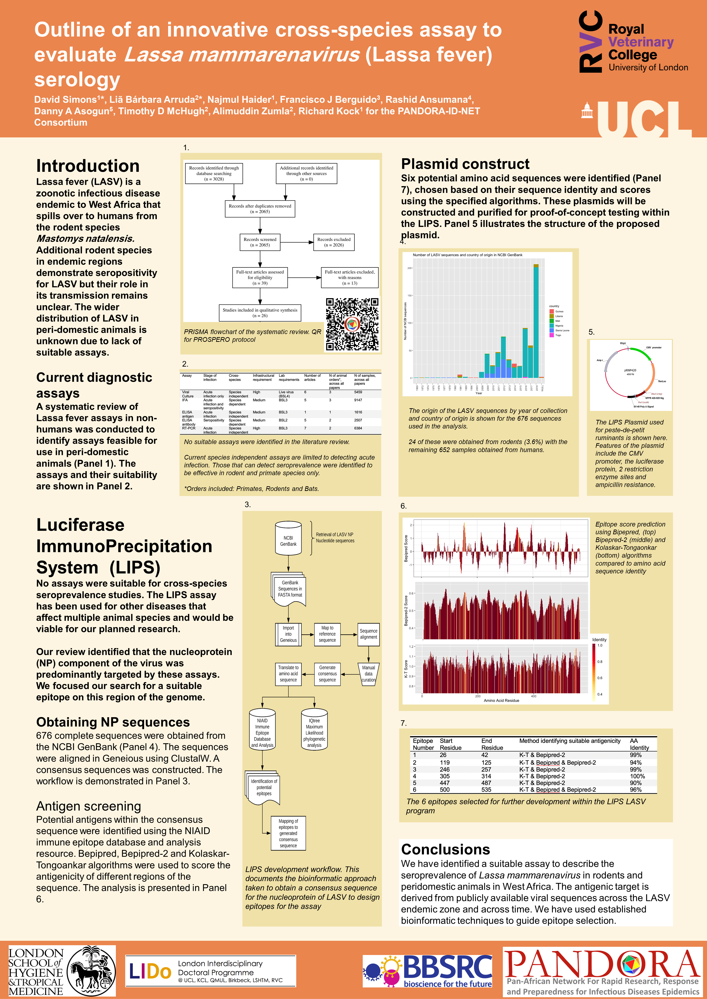

Development of a species agnostic assay for Lassa mammarenavirus
Diagnostics for Lassa mammarenavirus (LASV) are challenging due to the variability in viral sequence and structure. Several commercial PCR and antibody kits are available. To our knowledge there no pan-species antibody assays, although the BLACKBOX LASV IgG ELISA has been validated in both human and rodent systems. To support our ongoing work on understanding the epidemiology and transmission dynamics in multi-species systems in endemic regions we have begun developing a species agnostic assay. We adopted an approach that has been found to be successful for Peste des petits ruminants a virus that affects goats, sheep and camels and is targeted for eradication. These assays are built on the Luciferase Immunoprecipitation System (Berguido et al. 2016) which detect the presence of antibodies against the presented antigen.
The Luciferase Immuno-Precipitation System functions through differential rates of flourescence based on the ability for the Ruc-Fusion protein to convert the substrate. This can be used to confirm the presence of conjugation between the target antibody/immune complexes and the specific Ruc-Fusion protein.

A bioinformatic approach was implemented to identify potential antigen epitopes from previously published sequences on NCBI GenBank. This work was submitted to the ICREID 2020 conference, which unfortunately did not go ahead. These candidates have now progressed to a proof-of-principle stage and we are planning to visit Sierra Leone to validate this assay on samples stored there. A PDF of this poster can be accessed here.

References
Citation
@online{simons2022,
author = {David Simons},
title = {Development of a Species Agnostic Assay for {*Lassa}
Mammarenavirus*},
date = {2022-10-01},
langid = {en},
abstract = {Diagnostics for *Lassa mammarenavirus* (LASV) are
challenging due to the variability in viral sequence and structure.
Several commercial PCR and antibody kits are available. To our
knowledge there no pan-species antibody assays, although the
BLACKBOX LASV IgG ELISA has been validated in both human and rodent
systems. To support our ongoing work on understanding the
epidemiology and transmission dynamics in multi-species systems in
endemic regions we have begun developing a species agnostic assay.
We adopted an approach that has been found to be successful for
Peste des petits ruminants a virus that affects goats, sheep and
camels and is targeted for eradication. These assays are built on
the Luciferase Immunoprecipitation System
{[}@berguido2016specific{]} which detect the presence of antibodies
against the presented antigen.}
}